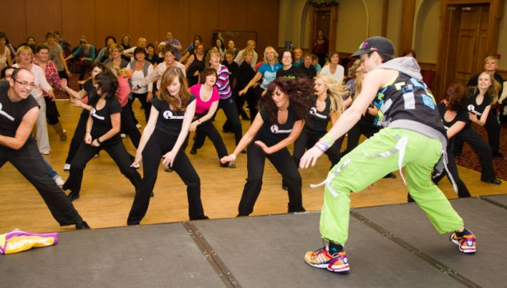

Zumba, the fitness craze taking Britain by storm, is not just dancing – it’s a life choice. Nisha Lilia Diu meets the millionaire behind it Dancing craze: More than a million people practise Zumba in the UK, but Alberto Perlman, the founder of Zumba exercise classes, hopes that number will quadruple It's lunchtime in a central London gym, and the atmosphere is infernal. The sweating hordes are cleansing themselves of fat and guilt (it’s only five weeks since Christmas) in a spectacularly self-flagellating fashion. One girl looks so penitent I could cry for her: she lunges forward, arms trembling under the weight of kettlebells, her movements distorted by exhaustion. But what’s that? From behind a door comes the sound of music and laughter. Inside, a young woman in fisherman’s pants, her braided hair tucked under a patterned bandana, shimmies and wiggles to pumping Latin music. The eight women in her class are shaking their booties as though they’re Jenny from the Block instead of Clemmie from Kensington. This, ladies and gentlemen, is Zumba. It is the world’s biggest branded fitness programme and it is probably happening at a gym or community centre near you. Founded in 2001 in Miami by three Albertos – Perez, Perlman and Aghion – it has 14 million weekly participants in more than 150 countries. “It would be quicker to tell you the countries we’re not in,” says Alberto Perlman, the CEO of Zumba Fitness (pronounced “zoomba”). He takes a sip of mineral water and settles into an armchair in a London hotel. “We’re not in North Korea, Iran or Cuba. We’re in Antarctica, though. We had a class there with four people, with some penguins in the back.” He laughs the easy laugh of a 35-year-old multi-millionaire. Perlman is here to open Zumba’s first office outside of America. The UK is the company’s second-biggest market, with 1.2 million people practising its mix of aerobics and dance steps. He hopes to quadruple that number and there’s every reason to expect he’ll do it. In American culture, Zumba is so ingrained it was a plot point in a recent Desperate Housewives episode. Michelle Obama has held a class on the White House lawn. They even have Zumba classes at the Pentagon. (They probably don’t wear the tasselled Zumba cargo pants and neon string vests at that one. The branded clothing, incidentally, is a £60 million business in itself).
